Conceito
1 - Conceito de Banco de Dados
A IMPORTÂNCIA DA INFORMAÇÃO
A informação é, para as empresas modernas, o principal recurso. É um insumo decisivo para as tarefas gerenciais.
Uma vez que os gerentes precisam de informação de alta qualidade para administrar a mudança em ambiente global turbulento,
muitas organizações estabeleceram sistemas de armazenagem e recuperação de dados – a matéria prima da informação.
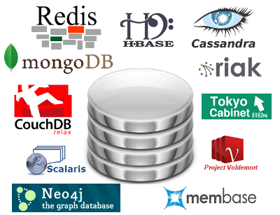
O conceito de banco de dados
Banco de dados seria então uma coleção de dados persistentes referentes a um tema específico. A função dessa coleção é atender às necessidades de informação de seus usuários, sendo elas a de uma simples consulta ou a de geração de informações ou conhecimento.
Sistemas de arquivos
Banco de dados com Modelo hierárquico
Banco de dados com Modelo de rede
Banco de dados com Modelo relacional
Bancos de dados com Modelo orientado a objetos
Bancos de dados NOSQL
Bancos de dados NewSQL
A utilização dos modelos apresentados foi possível por meio da utilização de sistemas que facilitassem o acesso aos dados e fossem capazes de manipular essas informações, implementando as regras de cada modelo. Cada um desses sistemas é chamado de Sistema de Gerenciamento de Banco de Dados (SGBD).
SISTEMAS GERENCIADORES DE BANCO DE DADOS
Os SGBDs são um conjunto de serviços de software responsáveis por evitar problemas tais como redundância de dados, dificuldade nos acessos, isolamento de dados, problemas de integridade, problemas de atomicidade ou problemas com acesso concorrente.
Para que os dados e as estruturas do banco de dados sejam manipulados, os SGBDs apresentam linguagens específicas para essas tarefas sendo a Structured Query Language (SQL) a mais utilizada nos dias de hoje para os bancos de dados relacionais. Alguns SGBD suportam o uso da linguagem java.
Database Management System (DBMS)
Linguagens de Bancos de dados
As linguagens podem ser divididas em duas partes diferentes: a linguagem de manipulação de dados e a linguagem de definição de dados.
A linguagem de manipulação de dados (DML) é a responsável por inserir, atualizar, excluir e recuperar os dados e as informações no banco de dados.
A linguagem de definição de dados (DDL) é utilizada para criar, modificar ou excluir a parte estrutural do banco de dados, incluindo as consistências necessárias para inserção de dados, permissões de acesso e implementação do esquema criado pelo projetista. O esquema do banco de dados é apenas uma parte do projeto do banco de dados.
O Projeto de um Banco de dados
Um projeto de banco de dados é composto de vários documentos que determinam projetos em diferentes níveis de visão.
O primeiro modelo é baseado na visão descritiva do negócio, que é a mais próxima do mundo real.
Esse documento busca trazer o maior número de informações e características para que as necessidades relatadas durante o levantamento
sejam satisfeitas.
O projeto de um banco de dados dependerá sempre da qualidade das informações resultantes da etapa de levantamento dos requisitos do sistema.
MODELAGEM DE DADOS
Qual o objetivo da modelagem de dados?
Por que modelar os dados do ambiente de negócios?
Representar os conceitos do ambiente de negócios observado
Documentar e normalizar os dados no modelo de dados
Fornecer processos de validação
Observar fatos no ambiente de negócios e identificar relacionamentos entre os objetos do ambiente de negócios.
Representar as regras de negócio que regulam os processos no ambiente de negócios
Administração de Dados
O objetivo principal da administração de dados é planejar, documentar, modelar, gerenciar e integrar os recursos de informação de uma empresa.
Esta integração pode ser alcançada através de uma combinação de perfis refinados e técnicas apropriadas, uso apropriado das ferramentas de Administração de Dados tais como um repositório de metadados e produtos de modelagem de dados, típicamente ferramentas CASE.
Duas abordagens são possíveis. Em ambos os casos, entretanto, os administradores de dados e os administradores de banco de dados cooperam estritamente no gerenciamento da organização dos dados:
BIBLIOGRAFIA COMPLEMENTAR
Modelagem de Dados, Peter Chen, Editora McGraw-Hill
Banco de dados. São Paulo: Érica, 2004. Machado, Filipe Nery Rodrigues. Projeto de Banco de Dados: uma visão prática. Editora Érica. São Paulo. 2002
Data Management : Banco de Dados e Organizações, Richard T. Watson, Editora LTC
INTRODUÇÃO
INTRODUÇÃO
Imagine um banco que se esquece de quem lhe deve dinheiro ou uma revista que perdeu os nomes e os endereços dos seus assinantes.
Em breve, estariam todos em grandes dificuldades, senão falidos.
Por isso, houve a necessidade de criar mecanismos para gerenciar esses dados, desde pequenas massas até grandes.
O gerenciamento de dados, exige habilidades em projeto, uso e gerenciamento dos sistemas de armazenamento de dados nas organizações modernas.
Para isso, desenvolvem-se aplicações (sistemas) informatizados que acessam esses dados, para que sejam incluídos, alterados, excluídos ou pesquisados.
O QUE SÃO DADOS
Dado é conjunto de símbolos “arranjados” a fim de representar a informação fora da mente humana. Um Elemento de Dado é o subconjunto de símbolos que compõem um dado. O dado em si não possui significado específico, não transmite conhecimento.
Exemplo :
O número de alunos matriculados na disciplina MATEMÁTICA no primeiro semestre de 2008 é igual a 57.
Quais são os elementos de dados??
Disciplina : MATEMÁTICA
Período : primeiro semestre de 2008
Matriculados : 57
Em conjunto, estes elementos nos fornece um dado porém sem significado pois não sabemos o que significa termos 57 alunos matriculados no primeiro semestre de 2008? Houve aumento do número de alunos? Houve evasão de alunos do curso naquele semestre? Qual o significado destes números?.
O QUE É INFORMAÇÃO
A informação pode ser entendida com o dado com significado, passível de interpretação e de entendimento por parte de quem o usa, enfim, é o dado capaz de transmitir conhecimento para a ação ou para a tomada de decisão.
AS CARACTERÍSTICAS DOS DADOS
Uma vez que percebemos a importância crítica dos dados para as empresas, podemos identificar algumas características desejáveis para esses dados:
Compartilhamento : Os dados devem poder ser compartilhados pelos diversos interessados, usuarios, departamentos e sistemas de informação
Disponibilidade : Os dados devem estar disponíveis para quem estiver interessado, seja para uma simples consulta ou relatório ou para uma análise detalhada feita por um tomador de decisão.
Segurança : Os dados precisam estar seguros, protegidos contra destruição, alteracao ou uso nãoautorizado.
Precisão : Os dados devem ser absolutamente confiáveis. Não deve haver dúvida quanto à precisão e veracidade dos dados armazenados
Atualizados : Os dados devem estar atualizados para que seja possível aà empresa aproveitar as oportunidades de negócio que possam surgir no mercado
DATABASE
CONCEITO DE BANCO DE DADOS
Banco de dados, (ou base de dados), é o conjunto de dados organizados de forma que façam sentido para o negocio. De forma que possam gerar informação.
Um banco de dados normalmente agrupa informações utilizadas para um mesmo tema.
Exemplo: Contabilidade, Pedidos, Cotação de Ações, Seguros, Vendas, Plano de Saúde, etc.
O objetivo principal de um sistema de banco de dados é possibilitar um ambiente que seja adequado e eficiente para uso na recuperação e armazenamento de informações.
Por exemplo: Um banco de dados de uma escola, teremos como informação:
- Os dados pessoais do aluno
- Os cursos oferecidos ou anos (antiga série)
- As turmas
- As disciplinas
- As notas
- Os professores
01 -SISTEMA GERENCIADOR DE BANCO DE DADOS ( SGBD )
É o conjunto de programas de computador, software, usado para a criação, administração e gerenciamento de um Banco de Dados. É responsável pelo gerenciamento de um Banco de Dados. Possui recursos e ferramentas para ajudar a gerenciar o acesso, a manipulação e a organização dos dados o que antes era feito pelos sistemas de informação. Existem diversos sistemas gerenciadores de banco de dados disponíveis no mercado, que atendem todos os tipos de bancos de dados ( hierárquico, rede, relacional e orientado à objetos ) e de todos os tamanhos desde bancos de dados desktop até bancos de dados corporativos. Um sistema gerenciador de banco de dados é projetado para ser a interface entre o banco de dados e os usuários e sistemas de informação que consulta e atualizam informações, servindo como uma interface. Para isso todo sistema gerenciador de banco de dados possui uma interface para permitir a comunicação com diversas aplicações que vão desde ferramentas de consulta do usuário final, componentes de sistemas de informação e web services.
02 -SISTEMA GERENCIADOR DE BANCO DE DADOS ( SGBD )
Um sistema gerenciador de banco de dados possui três componentes:
Linguagem de definição de dados (DDL do inglês Data Definition Language ) que especifica a estrutura dos objetos da base de dados e define os elementos de dados;
Linguagem de manipulação de dados (DML do inglês Data Manipulation Language ) que oferece comandos para consulta e atualização de dados na base;
Linguagem de Controle de Acesso aos Dados ( DCL do inglês Data Control Language ) que estabelece controle de acesso aos objetos do banco de dados e define os usuários e perfil de cada usuário do banco de dados.
03 -SISTEMA GERENCIADOR DE BANCO DE DADOS ( SGBD )
Características de um Sistema Gerenciador de Banco de Dados
Independência de Dados - A definição dos dados está é mantida pelo SGBD e não pelas aplicações que acessam o banco de dados;
Restrições de Integridade - A definição de mecanismos para garantir a integridade dos dados armazenados;
Segurança/Privacidade - Todo o acesso ao banco de dados é controlado pelo SGBD que possui mecanismos para autenticação dos usuários e controle de acesso aos objetos do banco de dados;
Restauração e Backup - Possui utilitários para restauração e backup dos dados de forma automática, através de agendamento ou via comando pelo DBA;
Reorganização de Dados - Possui recursos para reorganizar a estrutura, distribuição e particionamento dos dados do banco de dados;
Linguagem Não Procedural - Possui uma linguagem não procedural para operações de DML, DDL e DCL. O SQL é o padrão deste tipo de linguagem para bancos de dados relacionais;
Recuperação de Dados - Possui recursos para recuperação do estado do banco de dados a partir de um log de transações mantido pelo SGBD.
Principais Objetos de um Sistema Gerenciador de Banco de Dados
Esquema
Tabelas
Visões
Índices
Usuários e Papéis
Procedimentos Armazenados ( Stored Procedures, Functions e Triggers )
ESTRUTURA DE UM BANCO DE DADOS
Esquema
Tabelas
Visões
Índices
Usuários e Papéis
Procedimentos Armazenados ( Stored Procedures, Functions e Triggers )
Tabelas (ou entidades ou relação)
Nos modelos de base de dados relacionais, uma tabela é um conjunto de dados com um número determinado de colunas (ou campos) e um número infinito de linhas (ou registros ou tuplas).
Um banco de dados é composto de uma ou mais tabelas (podemos chamar também de entidades),
que uma forma comum de armazenagem de dados na empresa. O correto é que, através de um processo de modelagem de dados bem feito, todos os dados necessários ao negócio fiquem organizados nestas tabelas. A criação de cada tabela de um banco de dados, deverá ser feita com coerência e verificando o “assunto” que cada tabela irá armazenar.
Cada tabela deve armazenar dados relacionados com apenas um assunto ou conceito do negócio.
Colunas (ou atributos)
Cada tabela possui colunas (ou podemos chamar campos), que são os nomes dos dados que serão armazenados.
Cada coluna representa uma informação ou atributo da linha.
Cada campo (ou atributo) possuem propriedades, como por exemplo o tipo de dados a ser
armazenado (caracter, numérico, data), se é de preenchimento obrigatório e o tamanho.
Linhas (ou tuplas ou ocorrência de entidade)
As tabelas (ou entidades) também possuem linhas (ou tuplas) que são os registros contendo dados que estão armazenados em cada campo da tabela.
Então podemos dizer que tabela (ou entidade) é:
– Um objeto criado para armazenar os dados fisicamente
– Os dados são armazenados em linhas (tuplas) e colunas (atributos)
– Os dados de uma tabela normalmente descrevem um único assunto tal como
clientes, vendas, produtos, curso, aluno, disciplina, bilhete, filme, cinema, sessão, viagem, hotel, voo, etc.
PROJETO
Projeto de Banco de Dados
Um projeto de banco de dados é caracterizado por um processo que possui fases distintas e com aspectos
diferentes mas que tem como objetivo final a implementação de um banco de dados que atenda as necessidades
de informação do usuário e aos requisitos não funcionais de disponibilidade, desempenho e confiabilidade esperados.
As Três fases que fazem parte de um projeto de banco de dados:
1 - Modelo conceitual
2 - Modelo Lógico
3 - Modelo Físico
1 - Modelo conceitual
Representa os conceitos do negócio e as associações existentes entre estes conceitos. Também são representados os atributos assim como as regras de negócio que regulam as associações e conceitos do negócio. Este modelo é independente da tecnologia de implementação usada para o banco de dados e por isto é a etapa mais adequada para o envolvimento do usuário que não precisa ter conhecimentos técnicos.
As características principais deste modelo são :
· Visão Geral do negócio
· Facilidade de entendimento entre usuários e desenvolvedores
· Possui somente as entidades, relacionamentos e atributos principais
Os principais produtos da fase de projeto conceitual são:
O diagrama de entidade e relacionamentos, também conhecido por modelo de entidade relacionamentos;
Lista de Regras de Restrição de Integridade.
2- Modelo Lógico
Representa as estruturas de dados a serem implementadas e suas características considerando os limites impostos pelo modelo de dados usado para implementação do banco de dados. (banco de dados hierárquico , banco de dados de rede, banco de dados relacional ,etc.). As características principais deste modelo são:
· É derivado do modelo conceitual
· Possui entidades associativas em lugar de relacionamentos n:m
· Define as chaves primárias das entidades
· Define as chaves estrangeiras entre as entidades
· Normalização até a 3a. forma normal
· Adequado ao padrão de nomenclatura adotado pela empresa
· As Entidades e atributos são documentados em um Dicionário de Dados
O principal produto da fase de projeto lógico é o modelo relacional.
3- Modelo Físico
Este modelo representa a implementação do modelo lógico considerando algum tipo particular de tecnologia de banco de dados e os requisitos não funcionais ( desempenho, disponibilidade, segurança) que foram identificados pelo analista de requisitos. As características principais deste modelo são :
· Elaborado a partir do modelo lógico
· Pode variar segundo a tecnologia usada para implementação do banco de dados
· Possui tabelas físicas (log , lider , etc.)
· Possui colunas físicas (replicação)
No modelo físico, a linguagem SQL (Structured Query Language), é a linguagem padrão para definição,
manipulação e controle de uso das estruturas de dados.
Existem muitos Sistemas Gerenciadores de Banco de Dados disponíveis no mercado. Como exemplo,
podemos citar o PostgreSQL e o MySQL, que tem código aberto e são gratuitos.
Também existe o Oracle, DB2, Sybase SQL Server, Informix e Microsoft SQL Server, que são pagos e não possuem código aberto, sendo bastante usados em corporações.
Sistemas de Gerenciamento de Bancos de Dados - SGBDs
Como vimos na aula passada, o SGBD é um software responsável pelo armazenamento e gerenciamento de grandes volumes de dados estruturados de acordo com o modelo de dados implementado pelo SGBD e com recursos para acesso e atualização das informações.
Vantagens:
Rapidez na manipulação e no acesso à informação;
Redução do esforço humano (desenvolvimento e utilização);
Disponibilização da informação no tempo necessário;
Distribuição de informações geograficamente;
Controle de redundância e de inconsistência de informações;
Compartilhamento de dados;
Aplicação automática de restrições de integridade;
Controle de acesso e segurança dos dados;
Redução de problemas de integridade.
DICIONÁRIO DE DADOS
Definição:
Um dicionário de dados é um documento que descreve as informações representadas no modelo de dados, descrevendo informações de suas entidades e seus atributos ( tamanho, tipos de dado, obrigatoriedade e definição ).
Quando uma organização constrói um dicionário de dados de dimensão empresarial, o intuito deve ser o de padronizar precisamente definições semânticas a serem adotadas na empresa toda; portanto, ele deve incluir tanto definições semânticas como de representação para elementos de dados, sendo que os componentes semânticos focam na criação precisa do significado dos elementos de dados, e de outro lado, as definições de representação indicam como os elementos de dados são armazenados em uma estrutura de computador de acordo com seu tipo, ou seja, se são dados do tipo inteiro, caracter ou formato de data.
DICIONÁRIO DE DADOS - MODELO
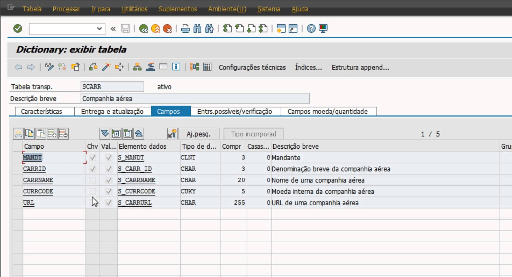
Tipos de Dados:
Os dados podem assumir vários tipos de dados, que irão variar dependendo do Sistema de Gerenciamento de Banco de dados que estiver em uso pela empresa: Abaixo seguem alguns tipos:
char: Caracter (string de valor fixo): O valor armazenado é uma string.
Varchar: Caracter (string de valor variável): O valor armazenado é uma string.
integer: Número inteiro é o tipo padrão e o tamanho do conjunto que pode ser representado.
float: Número em ponto flutuante de precisão simples. São conhecidos normalmente como
Números reais.
double: Número em ponto flutuante de precisão dupla
Date: Tipo data
Data Type -> Numeric Types
| Name | Storage Size | Description | Range |
|---|---|---|---|
| smallint | 2 bytes | small-range integer | -32768 to +32767 |
| integer | 4 bytes | typical choice for integer | -2147483648 to +2147483647 |
| bigint | 8 bytes | large-range integer | -9223372036854775808 to 9223372036854775807 |
| decimal | variable | user-specified precision | exact up to 131072 digits before the decimal point; up to 16383 digits after the decimal point |
| numeric | variable | user-specified precision | exact up to 131072 digits before the decimal point; up to 16383 digits after the decimal point |
| real | 4 bytes | variable-precision,inexact | 6 decimal digits precision |
| double precision | 8 bytes | variable-precision,inexact | 15 decimal digits precision |
| smallserial | 2 bytes | small autoincrementing integer | 1 to 32767 |
| serial | 4 bytes | autoincrementing integer | 1 to 2147483647 |
| bigserial | 8 bytes | large autoincrementing integer | 1 to 9223372036854775807 |
Data Type -> Monetary Types
money 8 bytes currency amount -92233720368547758.08 to +92233720368547758.07
Data Type -> Character Types
1 - character varying(n), varchar(n) variable-length with limit
2 - character(n), char(n) fixed-length, blank padded
3 - text variable unlimited length
Data Type -> Binary Data Types
bytea 1 or 4 bytes plus the actual binary string variable-length binary string
Data Type -> Date/Time Types
imestamp [(p)] [without time zone ] 8 bytes both date and time (no time zone) 4713 BC 294276 AD
timestamp [(p) ] with time zone 8 bytes both date and time, with time zone 4713 BC 294276 AD
date 4 bytes date (no time of day) 4713 BC 5874897 AD
time [ (p)] [ without time zone ] 8 bytes time of day (no date) 00:00:00 24:00:00
time [ (p)] with time zone 12 bytes times of day only, with time zone 00:00:00+1459 24:00:00-1459
interval [fields ] [(p) ] 12 bytes time interval -178000000 years 178000000 years
Data Type -> Boolean Type
boolean 1 byte state of true or false
Data Type -> Enumerated Type
CREATE TYPE week AS ENUM ('Mon', 'Tue', 'Wed', 'Thu', 'Fri', 'Sat', 'Sun');
Data Type -> Geometric Type
point 16 bytes Point on a plane (x,y)
line 32 bytes Infinite line (not fully implemented) ((x1,y1),(x2,y2))
lseg 32 bytes Finite line segment ((x1,y1),(x2,y2))
box 32 bytes Rectangular box ((x1,y1),(x2,y2))
path 16+16n bytes Closed path (similar to polygon) ((x1,y1),...)
path 16+16n bytes Open path [(x1,y1),...]
polygon 40+16n Polygon (similar to closed path) ((x1,y1),...)
circle 24 bytes Circle <(x,y),r> (center point and radius)
EXEMPLO DE UM PROJETO DE BANCO DE DADOS
Para que um projeto de banco de dados seja bem sucedido, são necessárias diversas etapas.
Etapas no projeto de um Banco de dados:
- Determinar qual o objetivo do projeto de Banco de Dados:
- Determinar as Entidades necessárias:
- Determinar os Atributos de cada Entidade:
- Determinar o identificador de cada Entidade
- Determinar os Relacionamentos:
- Normalizar a Estrutura do Banco de Dados:
As formas normais
O Processo de normalização aplica uma série de regras sobre as tabelas de um banco de dados, para verificar se estas estão corretamente projetadas. Embora existam cinco formas normais (ou regras de normalização),
na prática usamos um conjunto de três Formas Normais.
Vejamos as três primeiras formas normais do processo de normalização de dados.
Primeira Forma Normal (1FN)
Segunda Forma Normal (2FN)
Terceira Forma Normal (3FN)
Apesar de existir outras formas normais como a quarta forma normal e quinta forma normal, apenas as três primeiras tem sido considerada atualmente. As formas normais são importantes instrumentos para resolver antecipadamente problemas na estrutura do banco de dados.
Primeira Forma Normal (1FN)
Esta regra define as regras de organização básica de um banco de dados, que são: Eliminar as colunas duplicadas de uma mesma tabela; Criar tabelas separadas para cada grupo de dados relacionados e identificar cada linha com uma ou mais colunas como únicas (IDs, Códigos, etc). Ou seja, todos os atributos da relação estiverem baseados em um domínio simples, não contendo grupos ou valores repetidos; Em resumo, esta 1FN faz com que cada atributo (coluna) tenha uma relação atômica (trabalhar de forma indivisível), ou seja, cada coluna deve ter apenas um valor e cada registro tenha as mesmas colunas.
Primeira Forma Normal (1FN)

Segunda Forma Normal (2FN)
Nesta forma, são definidas as regras para remover dados duplicados: Estar na 1FN; Cada atributo não-chave for dependente da chave primária inteira, isto é, cada atributo não-chave não poderá ser dependente de apenas parte da chave. Ou seja, todos os seus atributos que não façam parte de alguma chave candidata devem ser determinados unicamente por qualquer chave candidata da tabela;
Segunda Forma Normal (2FN)

Terceira Forma Normal (3FN)
Normalmente, quando alguns desenvolvedores ou arquitetos de BD normalizam seu banco, chegam até esta forma e para por aqui mesmo. Neste passo, iremos um pouco mais a fundo: Estar na 2FN; Eliminar as colunas que não possuem dependência funcional com as chaves primárias. todos os atributos que não são chave sejam mutuamente independentes, isto é, que não existam funções que definam um ao outro. Portanto, sempre a chave por inteiro deve definir toda a tabela;
Terceira Forma Normal (3FN)
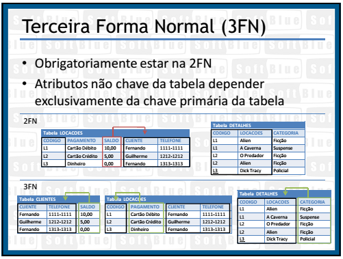
Quarta e Quinta Forma Normal (4FN e 5FN)
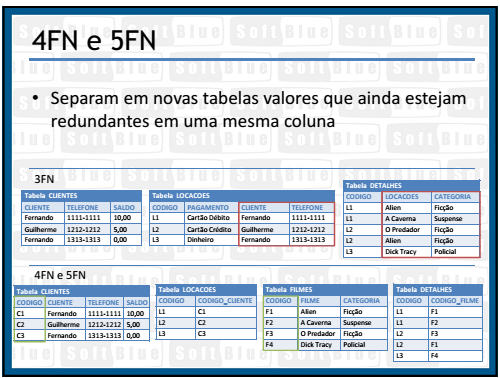
MER
MER - Modelo Entidade e Relacionamentos
Start -> levantamento dos requisitos necessários
Durante essa análise, identifica-se as principais partes e objetos envolvidos, suas possíveis ações e responsabilidades, suas características e como elas interagem entre si.
A partir das informações obtidas, pode-se desenvolver um modelo conceitual que será utilizado para orientar o desenvolvimento propriamente dito, fornecendo informações sobre os aspectos relacionados ao domínio do projeto em questão.
O Modelo Entidade Relacionamento (também chamado Modelo ER, ou simplesmente MER),
como o nome sugere, é um modelo conceitual utilizado na Engenharia de Software para descrever os objetos (entidades) envolvidos em um domínio de negócios, com suas características (atributos) e como elas se relacionam entre si (relacionamentos).
MER - Modelo Entidade e Relacionamentos
Observação: nem sempre criaremos modelos para um sistema completo, pois isso poderia resultar em um modelo muito extenso e difícil de interpretar.
MER - Entidades
Os objetos ou partes envolvidas um domínio, também chamados de entidades, podem ser classificados como físicos ou lógicos, de acordo sua existência no mundo real. Entidades físicas: são aquelas realmente tangíveis, existentes e visíveis no mundo real, como um cliente (uma pessoa, uma empresa) ou um produto (um carro, um computador, uma roupa). Já as entidades lógicas são aquelas que existem geralmente em decorrência da interação entre ou com entidades físicas, que fazem sentido dentro de um certo domínio de negócios, mas que no mundo externo/real não são objetos físicos (que ocupam lugar no espaço). São exemplos disso uma venda ou uma classificação de um objeto (modelo, espécie, função de um usuário do sistema).
MER - Entidades
As entidades são nomeadas com substantivos concretos ou abstratos que representem de forma clara sua função dentro do domínio. Exemplos práticos de entidades comuns em vários sistemas são Cliente, Produto, Venda, Turma, Função, entre outros. Podemos classificar as entidades segundo o motivo de sua existência:
MER -> Entidades -> Entidades fortes
Entidades Fortes:
são aquelas cuja existência independe de outras entidades, ou seja, por si só elas já possuem total sentido de existir. Em um sistema de vendas, a entidade produto, por exemplo, independe de quaisquer outras para existir.
MER -> Entidades -> Entidades Fracas
Entidades Fracas:
ao contrário das entidades fortes, as fracas são aquelas que dependem de outras entidades para existirem, pois individualmente elas não fazem sentido. Mantendo o mesmo exemplo, a entidade venda depende da entidade produto, pois uma venda sem itens não tem sentido.
MER -> Entidades -> Associativas
Entidades Associativas:
esse tipo de entidade surge quando há a necessidade de associar uma entidade a um relacionamento existente. Na modelagem Entidade-Relacionamento não é possível que um relacionamento seja associado a uma entidade, então tornamos esse relacionamento uma entidade associativa
MER -> Relacionamentos
Uma vez que as entidades são identificadas, deve-se então definir como se dá o relacionamento entre elas. De acordo com a quantidade de objetos envolvidos em cada lado do relacionamento, podemos classifica-los de três formas:
MER -> Relacionamento 1..1 (um para um)
Relacionamento 1..1 (um para um): cada uma das duas entidades envolvidas referenciam obrigatoriamente apenas uma unidade da outra. Por exemplo, em um banco de dados de currículos, cada usuário cadastrado pode possuir apenas um currículo na base, ao mesmo tempo em que cada currículo só pertence a um único usuário cadastrado.
MER -> Relacionamento 1..n ou 1..* (um para muitos)
Relacionamento 1..n ou 1..* (um para muitos): uma das entidades envolvidas pode referenciar várias unidades da outra, porém, do outro lado cada uma das várias unidades referenciadas só pode estar ligada uma unidade da outra entidade. Por exemplo, em um sistema de plano de saúde, um usuário pode ter vários dependentes, mas cada dependente só pode estar ligado a um usuário principal. Note que temos apenas duas entidades envolvidas: usuário e dependente. O que muda é a quantidade de unidades/exemplares envolvidas de cada lado.
MER -> Relacionamento n..n ou *..* (muitos para muitos)
Relacionamento n..n ou *..* (muitos para muitos): neste tipo de relacionamento cada entidade, de ambos os lados, podem referenciar múltiplas unidades da outra. Por exemplo, em um sistema de biblioteca, um título pode ser escrito por vários autores, ao mesmo tempo em que um autor pode escrever vários títulos. Assim, um objeto do tipo autor pode referenciar múltiplos objetos do tipo título, e vice versa.
MER -> Auto-Relacionamentos
Um outro exemplo que podemos representar seria o de uma entidade PESSOA que possui PAI. Ora o pai de uma pessoae a própria pessoa são ocorrencias da mesma entidade PESSOA, portanto temos um relacionamento entre ocorrencias da mesma entidade PESSOA que seriam as ocorrencias da pessoa, do pai. A representação desta situação seria feita da seguinte forma:.

Observe que a cardinalidade do auto-relacionamento indica opcionalidade visto que a PESSOA pode nao ter pai conhecido ou ter somente um pai.
Os auto-relacionamentos podem possuir qualquer tipo de cardinalidade.
MER -> Auto-Relacionamentos
É importante observar que nessa caso a forma de representação é a mesma pois se trata da entidade PRODUTO que mantem um relacionamento COMPOSIÇÂO com ela mesma, sendo que a única alteração é com respeito à cardinalidade deste relacionamento que é muitos para muitos.
Segue abaixo exemplo de como seria representado este auto-relacionamento.
Os auto-relacionamentos são muito usados para representar hierarquias e composições de elementos do mundo real que são ocorrencias em uma mesma entidade.
A forma de representação é simples sendo que devemos ter especial atenção a cardinalidade do auto-relacionamento..
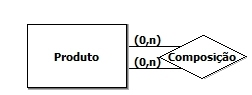
MER -> Relacionamento -> Observação
Os relacionamentos em geral são nomeados com verbos ou expressões que representam a forma como as entidades interagem, ou a ação que uma exerce sobre a outra. Essa nomenclatura pode variar de acordo com a direção em que se lê o relacionamento. Por exemplo: um autor escreve vários livros, enquanto um livro é escrito por vários autores.
MER -> Atributos
Atributos são as características que descrevem cada entidade dentro do domínio. Por exemplo, um cliente possui nome, endereço e telefone. Durante a análise de requisitos, são identificados os atributos relevantes de cada entidade naquele contexto, de forma a manter o modelo o mais simples possível e consequentemente armazenar apenas as informações que serão úteis futuramente. Uma pessoa possui atributos pessoais como cor dos olhos, altura e peso, mas para um sistema que funcionará em um supermercado, por exemplo, estas informações dificilmente serão relevantes. Os atributos podem ser classificados quanto à sua função da seguinte forma:
MER -> Atributos -> classificão
Descritivos: representam característica intrínsecas de uma entidade, tais como nome ou cor.
Nominativos: além de serem também descritivos, estes têm a função de definir e identificar um objeto. Nome, código, número são exemplos de atributos nominativos.
Referenciais: representam a ligação de uma entidade com outra em um relacionamento. Por exemplo, uma venda possui o CPF do cliente, que a relaciona com a entidade cliente.
Quanto à sua estrutura, podemos ainda classificá-los como:
Simples: um único atributo define uma característica da entidade. Exemplos: nome, peso.
Compostos: para definir uma informação da entidade, são usados vários atributos.
Por exemplo, o endereço pode ser composto por rua, número, bairro, etc.
MER -> Chave Primária
Alguns atributos representam valores únicos que identificam a entidade dentro do domínio e não podem se repetir.
Em um cadastro de clientes, por exemplo, esse atributo poderia ser o CPF. A estes chamamos de Chave Primária.
MER -> Chave Estrangeira
Já os atributos referenciais são chamados de Chave Estrangeira e geralmente estão ligados à chave primária da outra entidade. Estes termos são bastante comuns no contexto de bancos de dados. Mantendo o exemplo anterior, a entidade cliente tem como chave primária seu CPF, assim, a venda possui também um campo “CPF do cliente” que se relaciona com o campo CPF da entidade cliente.
DER
DER -> Diagrama Entidade Relacionamento
Enquanto o MER é um modelo conceitual, o Diagrama Entidade Relacionamento (Diagrama ER ou ainda DER) é a sua representação gráfica e principal ferramenta. Em situações práticas, o diagrama é tido muitas vezes como sinônimo de modelo, uma vez que sem uma forma de visualizar as informações, o modelo pode ficar abstrato demais para auxiliar no desenvolvimento do sistema. Dessa forma, quando se está modelando um domínio, o mais comum é já criar sua representação gráfica, seguindo algumas regras.
DER -> Notação Original
Em sua notação original, proposta por Peter Chen (idealizador do modelo e do diagrama), as entidades deveriam ser representadas por retângulos, seus atributos por elipses e os relacionamentos por losangos, ligados às entidades por linhas, contendo também sua cardinalidade (1..1, 1..n ou n..n)
DER -> Diagrama Entidade Relacionamento
Exemplo simples de um diagrama para um sistema de imobiliárias.

DER -> Cardinalidade
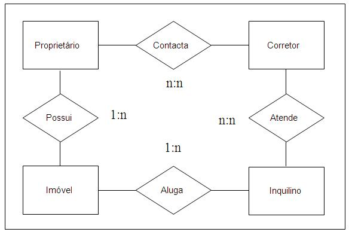
DER -> Cardinalidade de uma forma mais completa
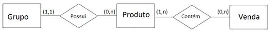
DER -> Diagrama Entidade Relacionamento
No diagrama anterior, lemos os relacionamentos da seguinte forma:
1 ou 1 grupo possui 0 ou muitos produtos. Como de um lado temos “1 ou 1”, isso equivale a apenas “1”, pois não temos várias possibilidades. Já do lado do produto, indicamos que um grupo pode possuir nenhum produto, mas também pode possuir vários.
0 ou várias vendas contém 1 ou muitos produtos. Ou seja, um produto pode nunca ser vendido (0 vendas) como também pode ser vendido várias vezes (n vendas). Já uma venda deve conter 1 ou vários produtos, pois uma venda não pode estar vazia (0 produtos)
DER -> Os atributos
Os atributos, como já foi dito, podem aparecer no diagrama na forma de elipses ligadas às entidades. Essa foi a notação original proposta, mas como podemos ver na Figura 4, ela deixa o diagrama com muitos itens e pode atrapalhar um pouco a organização destes. 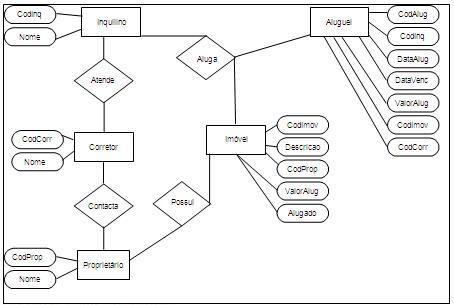
DER -> Diagrama Entidade Relacionamento
Em uma notação mais atual, comumente utilizada na UML, os atributos aparecem listados dentro do próprio retângulo da entidade, enquanto o nome da entidade aparece no topo na forma de título.

DER -> Ferramentas CASE
Do inglês Computer-Aided Software Engineering, as chamadas ferramentas CASE são aquelas baseadas em computadores (softwares) utilizadas na Engenharia de Software para auxílio nas atividades desde análise de requisitos até ,modelagem de dados
No contexto desse artigo, as ferramentas CASE permitem a criação de diagramas de forma simples em um ambiente de fácil utilização e com recursos para incluir as principais regras de composição dos diagramas. Exemplos comuns desse tipo de ferramenta são: Star UML, Astah e ERwin Data Modeler. Na Figura 6 vemos um exemplo de diagrama sendo construído no Astah.
DER -> BR Modelo
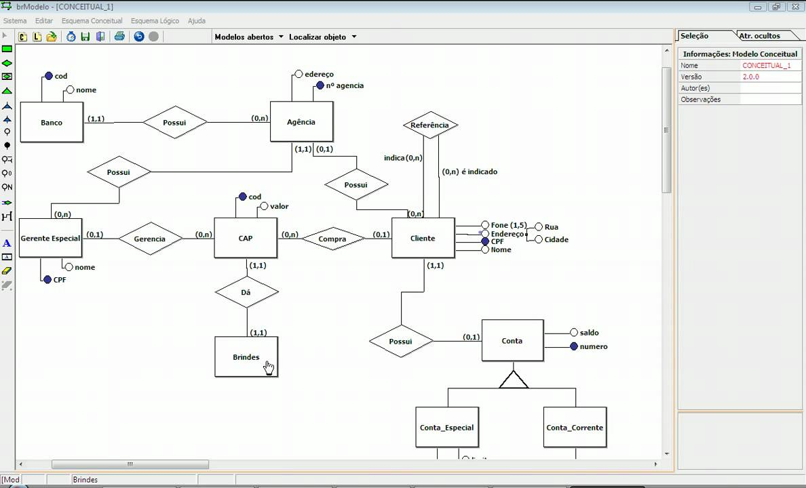
DER -> DB Designer4

DER -> Manual Postgres Vesion 9.6
DDL
DDL -> Current Date
CMD: SELECT current_date
CMD: SELECT 2 + 2
DDL -> CREATE NEW TABLE AND DROP TABLE
CMD: CREATE TABLE weather (
city varchar(80),
temp_lo int, -- low temperature
temp_hi int, -- high temperature
prcp real, -- precipitation
date date
);
CMD: DROP TABLE weather;
DDL -> Default Values
CMD: CREATE TABLE products (
product_no SERIAL,
name text,
price numeric DEFAULT 9.99,
product_no integer DEFAULT nextval('products_product_no_seq')
);
DDL -> Constraints
CMD: CREATE TABLE products (
product_no integer UNIQUE,
name text NOT NULL,
price numeric CHECK (price > 0),
price_consumer numeric CONSTRAINT positive_price CHECK (price > 0),
discounted_price numeric CHECK (discounted_price > 0),
>CHECK (price > discounted_price)
);
DDL -> Constraints UNIQUE
CMD: CREATE TABLE products (
product_no integer,
product_2 integer CONSTRAINT must_be_different UNIQUE,
UNIQUE (product_no),
a integer,
c integer,
UNIQUE (a, c)
);
DDL -> Primary Key
CMD: CREATE TABLE products (
product_no integer UNIQUE NOT NULL,
product_2 integer PRIMARY KEY,
a integer,
c integer,
PRIMARY KEY (a, c)
);
DDL -> Foreign Key
CMD:
CREATE TABLE orders (
product_2 integer REFERENCES products ON DELETE RESTRICT,
order_id_2 integer REFERENCES orders ON DELETE CASCADE,
order_id integer PRIMARY KEY,
product_no integer REFERENCES products (product_no),
product_no integer REFERENCES products,
quantity integer,
FOREIGN KEY (b, c) REFERENCES other_table (c1, c2)
);
DDL -> Modifying Tables -> Add columns
CMD: ALTER TABLE products ADD COLUMN description text;
CMD: ALTER TABLE products ADD COLUMN description text CHECK (description <> '');
DDL -> Modifying Tables -> Removing a Column
CMD: ALTER TABLE products DROP COLUMN description;
CMD: ALTER TABLE products DROP COLUMN description CASCADE;
DDL -> Modifying Tables -> Adding a Constraint
CMD: ALTER TABLE products ADD CHECK (name <> '');
CMD: ALTER TABLE products ADD CONSTRAINT some_name UNIQUE (product_no)
CMD: ALTER TABLE products ADD FOREIGN KEY (product_group_id) REFERENCES product_groups;
CMD: ALTER TABLE products ALTER COLUMN product_no SET NOT NULL;
DDL -> Modifying Tables -> Removing a Constraint
CMD: ALTER TABLE products DROP CONSTRAINT some_name;
CMD: ALTER TABLE products ALTER COLUMN product_no DROP NOT NULL;
DDL -> Modifying Tables -> Changing a Column's Default Value
CMD: ALTER TABLE products ALTER COLUMN price SET DEFAULT 7.77;
CMD: ALTER TABLE products ALTER COLUMN price DROP DEFAULT;
DDL -> Modifying Tables -> Changing a Column's Data Type
CMD: ALTER TABLE products ALTER COLUMN price TYPE numeric(10,2);
DDL -> Modifying Tables -> Renaming a Column
CMD: ALTER TABLE products RENAME COLUMN product_no TO product_number;
DDL -> Modifying Tables -> Renaming a Column
CMD: ALTER TABLE products RENAME COLUMN product_no TO product_number;
DDL -> Modifying -> Privileges
CMD: GRANT UPDATE ON accounts TO joe;
CMD: REVOKE ALL ON accounts FROM PUBLIC;
DDL -> Modifying -> Privileges
CMD: GRANT UPDATE ON accounts TO joe;
CMD: GRANT SELECT ON mytable TO PUBLIC;
CMD: GRANT SELECT, UPDATE, INSERT ON mytable TO admin;
CMD: GRANT SELECT (col1), UPDATE (col1) ON mytable TO miriam_rw;
CMD: REVOKE ALL ON accounts FROM PUBLIC;
DDL -> Modifying -> Create User
CMD: CREATE USER weder WITH PASSWORD 'weder96';
DML
DML -> Inserting Data
CREATE TABLE products (
product_no integer,
name text,
price numeric
);
CMD: INSERT INTO products VALUES (1, 'Cheese', 9.99);
CMD: INSERT INTO products (product_no, name, price) VALUES (1, 'Cheese', 9.99);
CMD: INSERT INTO products (name, price, product_no) VALUES ('Cheese', 9.99, 1);
CMD: INSERT INTO products (product_no, name) VALUES (1, 'Cheese');
CMD: INSERT INTO products VALUES (1, 'Cheese');
CMD: INSERT INTO products (product_no, name, price) VALUES (1, 'Cheese', DEFAULT);
CMD: INSERT INTO products DEFAULT VALUES;
CMD: INSERT INTO products (product_no, name, price) VALUES
(1, 'Cheese', 9.99),
(2, 'Bread', 1.99),
(3, 'Milk', 2.99);
CMD: INSERT INTO products (product_no, name, price)
SELECT product_no, name, price FROM new_products
WHERE release_date = 'today';
DML -> Updating Data
CMD: UPDATE products SET price = 10 WHERE price = 5;
CMD: UPDATE products SET price = price * 1.10;
CMD: UPDATE mytable SET a = 5, b = 3, c = 1 WHERE a > 0;
DML -> Deleting Data
CMD: DELETE FROM products WHERE price = 10;
CMD: DELETE FROM products;
DML -> Returning Data From Modified Rows
CMD: CREATE TABLE users (firstname text, lastname text, id serial primary key);
CMD: INSERT INTO users (firstname, lastname) VALUES ('Joe2', 'Cool3') RETURNING id;
CMD: UPDATE users SET firstname = 'weder' WHERE id =1 RETURNING firstname, lastname AS new_name;
CONSULTAS
QUERY -> SELECT
Temos um banco de dados chamado LIVRARIA
O mesmo possui N tabelas entre ela a de AUTOR
Queremos listar os dados desta tabela
CMD:SELECT * FROM NOME_DA_TABELA
CMD:SELECT * FROM AUTOR
QUERY -> SELECT -> DEFINE FIELDS(CAMPOS)
CMD:SELECT ID, CPF, NOME FROM AUTOR
QUERY -> SELECT -> CLÁUSULA WHERE
CMD:SELECT * FROM AUTOR WHERE ID > 7
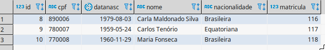
CMD:SELECT * FROM AUTOR WHERE ID > 7 and matricula=116
QUERY -> SELECT -> LIKE -> NOT LIKE
--busca todos os nomes que possui Carla(Não Importa em que local do Texto- %)
CMD: select * from autor where nome like '%Carla%'
--busca todos os nomes que possui Inicio Carla(Somente que inicia com Carla- %)
CMD: select * from autor where nome like 'Car%'
--busca todos os nomes que possui Termina Carla(Somente que Termina com Silva- %)
CMD: select * from autor where nome like '%Silva'
--busca todos os nomes que Segunda Letra e um A
CMD: select * from autor where nome like '_a%'
--busca todos os nomes que Segunda Letra e um Ma e possui uma parte com Fon
CMD: select * from autor where nome like 'Ma%Fon%'
--busca todos os nomes que SIMILAR TO
CMD: select * from autor where nome similar to 'Ma%Fon%'
~~ is equivalent to LIKE
~~* is equivalent to ILIKE(not case sensitive)
!~~ is equivalent to NOT LIKE
!~~* is equivalent to NOT ILIKE(not case sensitive)
QUERY -> SELECT -> STRING
CMD: select 'Post' || 'greSQL' --PostgreSQL
CMD: select char_length('jose') --4
CMD: select lower('TOM') --tom
CMD: select position('om' in 'Thomas') --3
CMD: select substring('Thomas' from 2 for 3) -- hom
CMD: select substring('Thomas' from '...$') --mas
CMD: select substring('Thomas' from '%#"o_a#"_' for '#') --oma
CMD: select trim(both 'xyz' from 'yxTomxx') --Tom
CMD: select trim(both from 'yxTomxx', 'xyz') --Tom
CMD: select upper('tom') --TOM
QUERY -> SELECT -> STRING 2
CMD: select concat('abcde', 2, NULL, 22) --abcde222
CMD: select lpad('hi', 5, 'xy') --xyxhi
CMD: select ltrim('zzzytest', 'xyz') -- test
CMD: select md5('123456') --e10adc3949ba59abbe56e057f20f883e
CMD: select quote_literal(42.5) '42.5'
CMD: select regexp_replace('Thomas', '.[mN]a.', 'M') --ThM
CMD: select repeat('Pg', 4) --PgPgPgPg
CMD: select replace('abcdefabcdef', 'cd', 'XX') --abXXefabXXef
CMD: select reverse('abcde') --edcba
CMD: select right('abcde', 2) --de
CMD: select rpad('hi', 5, 'xy') --hixyx
CMD: select rtrim('testxxzx', 'xyz') --test
CMD: select split_part('abc~@~def~@~ghi', '~@~', 2) --def
CMD: select strpos('high', 'ig') --2
CMD: select substr('alphabet', 3, 2) --ph
CMD: select translate('12345', '143', 'ax') --a2x5
CMD: select quote_literal(E'O\'Reilly') --'O''Reilly'
QUERY -> SELECT -> CONSTANTES E OPERADORES
Operator/Element Associativity Description
. left table/column name separator
:: left PostgreSQL-style typecast
[ ] left array element selection
+ - right unary plus, unary minus
^ left exponentiation
* / % left multiplication, division, modulo
+ - left addition, subtraction
(any other operator) left all other native and user-defined operators
BETWEEN IN LIKE ILIKE SIMILAR range containment, set membership, string matching
< > = <= >= <> comparison operators
IS ISNULL NOTNULL IS TRUE, IS FALSE, IS NULL, IS DISTINCT FROM, etc
NOT right logical negation
AND left logical conjunction
OR left logical disjunction
QUERY -> SELECT -> OPERADORES
CMD: SELECT 5! --120
CMD: SELECT 2+2 --4
CMD: SELECT 3*2 --6
CMD: SELECT 3^2::numeric(13,2) --9
CMD: SELECT 9%2 --1
CMD: SELECT 9/3 --3
CMD: SELECT 3*(3+2) --15
CMD: SELECT 3>2 --true
CMD: SELECT 3<=2 --false
CMD: SELECT 3<>3 --false
QUERY -> SELECT ->AGRUPAMENTO
avg(expressão)
count(*)
count(expressão)
max(expressão)
min(expressão)
stddev(expressão)
sum(expressão)
variance(expressão)
Onde expressão, pode ser "ALL expressão" ou “DISTINCT expressão”.
**Todas vez que usar as funções acima e necesario colocar os campo, que estao fora delas no group by
QUERY -> SELECT ->AGRUPAMENTO
CMD: select count(*) as qtd from autor
CMD: select count(*), nacionalidade from autor group by nacionalidade
CMD: select count(*), nacionalidade from autor group by 2
CMD: select max(id) as maior from autor
CMD: select min(id) as menor from autor
CMD: select avg(matricula) as media from autor
CMD: select sum(id) as media from autor
CMD: select variance(id) as media from autor
CMD: select distinct * from livro
QUERY -> SELECT ->AGRUPAMENTO - HAVING
CMD:
select idvenda, sum(quantidade) as qtd, sum(total) as total
from venda
group by idvenda
having sum(total)>300
order by idvenda
**O having funciona como o where do Group by.
QUERY -> SELECT ->AGRUPAMENTO -> ROW_NUMBER
CMD: select *, ROW_NUMBER () OVER (ORDER BY id) from venda
--Sem Usar o Group by
CMD: select distinct sum(total)over (partition by idvenda), idvenda, cliente_id from venda
QUERY -> SELECT -> SUBSELECT
CMD:
select * from
(select idvenda, sum(quantidade) as qtd, sum(total) as total
from venda
group by idvenda
order by idvenda) as t1
where total>=300
QUERY -> SELECT -> IN
CMD: select * from venda where livro_id IN(4,5)
QUERY -> SELECT -> WITH
CMD:
with busca as (
select * from venda where livro_id IN(4,5,1)
)
select * from busca
QUERY -> SELECT -> CREATE VIEW
CMD:
create or replace view busca as
select * from venda where livro_id IN(4,5,1)
CMD:
select * from busca
QUERY -> SELECT -> DROP VIEW
CMD: drop view busca
QUERY -> SELECT -> FIELD -> JSON
-- Simple scalar/primitive value
-- Primitive values can be numbers, quoted strings, true, false, or null
CMD: SELECT '5'::json;
-- Array of zero or more elements (elements need not be of same type)
CMD: SELECT '[1, 2, "foo", null]'::json;
-- Object containing pairs of keys and values
-- Note that object keys must always be quoted strings
CMD: SELECT '{"bar": "baz", "balance": 7.77, "active": false}'::json;
-- Arrays and objects can be nested arbitrarily
CMD: SELECT '{"foo": [true, "bar"], "tags": {"a": 1, "b": null}}'::json;
QUERY -> SELECT -> FIELD -> JSON
-- String exists as array element:
CMD: SELECT '["foo", "bar", "baz"]'::jsonb ? 'bar';
-- String exists as object key:
CMD: SELECT '{"foo": "bar"}'::jsonb ? 'foo';
-- Object values are not considered:
CMD: SELECT '{"foo": "bar"}'::jsonb ? 'bar'; -- yields false
-- As with containment, existence must match at the top level:
CMD: SELECT '{"foo": {"bar": "baz"}}'::jsonb ? 'bar'; -- yields false
-- A string is considered to exist if it matches a primitive JSON string:
CMD: SELECT '"foo"'::jsonb ? 'foo';
QUERY -> SELECT -> FIELD -> JSON ->CREATE
CMD: CREATE TABLE books ( id integer, data json );
CMD: INSERT INTO books VALUES (1,'{ "name": "Book the First", "author": { "first_name": "Bob", "last_name": "White" } }');
CMD: INSERT INTO books VALUES (2,'{ "name": "Book the Second", "author": { "first_name": "Charles", "last_name": "Xavier" } }');
CMD: INSERT INTO books VALUES (3,'{ "name": "Book the Third", "author": { "first_name": "Jim", "last_name": "Brown" } }');
QUERY -> SELECT -> FIELD -> JSON ->SELECT
CMD: SELECT id, data->>'name' AS name FROM books;
CMD: SELECT id, data->'author'->>'first_name' as author_first_name FROM books;
CMD: SELECT * FROM books WHERE data->>'name' = 'Book the First';
CMD: SELECT * FROM books WHERE data->'author'->>'first_name' = 'Charles';
Exercicios:
19_jsonEvents.sql
QUERY -> SELECT -> DATE -> TIMESTAMP -> TIME
CMD: select date '2001-09-28' + integer '7' --date '2001-10-05'
CMD: select date '2001-09-28' + interval '1 hour' --timestamp '2001-09-28 01:00:00'
CMD: select date '2001-09-28' + time '03:00' --timestamp '2001-09-28 03:00:00'
CMD: select interval '1 day' + interval '1 hour' --interval '1 day 01:00:00'
CMD: select timestamp '2001-09-28 01:00' + interval '23 hours' --timestamp '2001-09-29 00:00:00'
CMD: select time '01:00' + interval '3 hours' --time '04:00:00'
CMD: select interval '23 hours' --interval '-23:00:00'
CMD: select date '2001-10-01' - date '2001-09-28' --integer '3' (days)
CMD: select date '2001-10-01' - integer '7' --date '2001-09-24'
CMD: select date '2001-09-28' - interval '1 hour' --timestamp '2001-09-27 23:00:00'
CMD: select time '05:00' - time '03:00' --interval '02:00:00'
CMD: select time '05:00' - interval '2 hours' --time '03:00:00'
CMD: select timestamp '2001-09-28 23:00' - interval '23 hours' --timestamp '2001-09-28 00:00:00'
CMD: select interval '1 day' - interval '1 hour' --interval '1 day -01:00:00'
CMD: select timestamp '2001-09-29 03:00' - timestamp '2001-09-27 12:00' --interval '1 day 15:00:00'
CMD: select 900 * interval '1 second' --interval '00:15:00'
CMD: select 21 * interval '1 day' --interval '21 days'
CMD: select double precision '3.5' * interval '1 hour' -- interval '03:30:00'
CMD: select interval '1 hour' / double precision '1.5' -- interval '00:40:00'
QUERY -> SELECT -> DATAS -> TIMESTAMP ->TIME
CMD: select age(timestamp '2001-04-10', timestamp '1957-06-13') --43 years 9 mons 27 days
CMD: select age(timestamp '1957-06-13') --43 years 8 mons 3 days
CMD: select date_part('hour', timestamp '2001-02-16 20:38:40') --20
CMD: select date_part('month', interval '2 years 3 months') --3
CMD: select date_trunc('hour', timestamp '2001-02-16 20:38:40') --2001-02-16 20:00:00
CMD: select date_trunc('hour', interval '2 days 3 hours 40 minutes') --2 days 03:00:00
CMD: select extract(hour from timestamp '2001-02-16 20:38:40') --20
CMD: select extract(month from interval '2 years 3 months') --3
CMD: select isfinite(date '2001-02-16') --true
CMD: select isfinite(timestamp '2001-02-16 21:28:30') --true
CMD: select isfinite(interval '4 hours') --true
CMD: select justify_days(interval '35 days') --1 mon 5 days
CMD: select justify_hours(interval '27 hours') --1 day 03:00:00
CMD: select justify_interval(interval '1 mon -1 hour') --29 days 23:00:00
QUERY -> SELECT -> DATAS -> TIMESTAMP
CMD: select localtime -- time
CMD: select localtimestamp --now()
CMD: select make_date(2013, 7, 15) --2013-07-15
CMD: select make_interval(days => 10) --10 days
CMD: select make_time(8, 15, 23.5) --08:15:23.5
CMD: select make_timestamp(2013, 7, 15, 8, 15, 23.5) --2013-07-15 08:15:23.5
CMD: select make_timestamptz(2013, 7, 15, 8, 15, 23.5) --2013-07-15 08:15:23.5+01
CMD: select now()
CMD: select statement_timestamp() --now()
CMD: select timeofday() --now() configuration
CMD: select transaction_timestamp() --now()
CMD: select to_timestamp(1284352323) --2010-09-13 04:32:03-00
QUERY -> SELECT -> DATAS -> TIMESTAMP -> OVERLAPS
(start1, end1) OVERLAPS (start2, end2)
(start1, length1) OVERLAPS (start2, length2)
CMD: SELECT (DATE '2001-02-16', DATE '2001-12-21') OVERLAPS (DATE '2001-10-30', DATE '2002-10-30');
Result: true
CMD: SELECT (DATE '2001-02-16', INTERVAL '100 days') OVERLAPS (DATE '2001-10-30', DATE '2002-10-30');
Result: false
CMD: SELECT (DATE '2001-10-29', DATE '2001-10-30') overlaps (DATE '2001-10-30', DATE '2001-10-31');
Result: false
CMD: SELECT (DATE '2001-10-30', DATE '2001-10-30') overlaps (DATE '2001-10-30', DATE '2001-10-31');
Result: true
QUERY -> SELECT -> DATAS -> TIMESTAMP -> EXTRACT
CMD: SELECT EXTRACT(EPOCH FROM timestamptz '2013-07-01 12:00:00') -
EXTRACT(EPOCH FROM timestamptz '2013-03-01 12:00:00');
Result: 10540800
CMD: SELECT (EXTRACT(EPOCH FROM timestamptz '2013-07-01 12:00:00') -
EXTRACT(EPOCH FROM timestamptz '2013-03-01 12:00:00'))
/ 60 / 60 / 24;
Result: 122.0000
CMD: SELECT timestamptz '2013-07-01 12:00:00' - timestamptz '2013-03-01 12:00:00';
Result: 122 days 00:00:00
CMD: SELECT age(timestamptz '2013-07-01 12:00:00', timestamptz '2013-03-01 12:00:00');
Result: 4 mons
QUERY -> SELECT -> DATAS -> TIMESTAMP -> CENTURY
CMD: SELECT EXTRACT(CENTURY FROM TIMESTAMP '2000-12-16 12:21:13');
Result: 20
CMD: SELECT EXTRACT(CENTURY FROM TIMESTAMP '2018-02-16 20:38:40');
Result: 21
QUERY -> SELECT -> DATAS -> TIMESTAMP -> EXTRACT
CMD: SELECT EXTRACT(DAY FROM TIMESTAMP '2001-02-16 20:38:40');
Result: 16
CMD: SELECT EXTRACT(DAY FROM INTERVAL '40 days 1 minute');
Result: 40
CMD: SELECT EXTRACT(DECADE FROM TIMESTAMP '2001-02-16 20:38:40');
Result: 200
CMD: SELECT EXTRACT(DOW FROM TIMESTAMP '2001-02-16 20:38:40');
Result: 5
CMD: SELECT EXTRACT(DOY FROM TIMESTAMP '2001-02-16 20:38:40');
Result: 47
QUERY -> SELECT -> DATAS -> TIMESTAMP -> -> EPOCH
CMD: SELECT EXTRACT(EPOCH FROM TIMESTAMP WITH TIME ZONE '2001-02-16 20:38:40.12-08');
Result: 982384720.12
CMD: SELECT EXTRACT(EPOCH FROM INTERVAL '5 days 3 hours');
Result: 442800
CMD: SELECT to_timestamp(982384720.12);
Result: 2001-02-17 04:38:40.12+00
CMD: SELECT EXTRACT(HOUR FROM TIMESTAMP '2001-02-16 20:38:40');
Result: 20
CMD: SELECT EXTRACT(ISODOW FROM TIMESTAMP '2001-02-18 20:38:40');
Result: 7
CMD: SELECT EXTRACT(ISOYEAR FROM DATE '2006-01-01');
Result: 2005
CMD: SELECT EXTRACT(ISOYEAR FROM DATE '2006-01-02');
Result: 2006
QUERY -> SELECT -> DATAS -> TIMESTAMP -> CURRENT
CMD: SELECT CURRENT_TIME;
Result: NOW()::TIME
CMD: SELECT CURRENT_DATE;
Result: NOW()::DATE
CMD: SELECT CURRENT_TIMESTAMP;
Result: NOW()
CMD: SELECT CURRENT_TIMESTAMP(2);
Result: NOW()::DD-MM-YYYY HH:MM:SS
CMD: SELECT LOCALTIMESTAMP;
Result: NOW()::DD-MM-YYYY HH:MM:SS
TCL
QUERY -> TRANSACTION -> TRANSACTION CONTROL
The following commands are used to control transactions
BEGIN OR BEGIN TRANSACTION − To start a transaction.
COMMIT − To save the changes, alternatively you can use END TRANSACTION command.
ROLLBACK − To rollback the changes
Transactional control commands are only used with the DML commands INSERT, UPDATE and DELETE only.
They cannot be used while creating tables or dropping them because these operations are automatically committed
in the database.
QUERY -> TRANSACTION -> LANGUAGE
No PostgreSQL, uma transação é configurada cercando os comandos SQL da transação com os comandos BEGIN e COMMIT.
Então, nossa transação bancária seria, na verdade:
BEGIN;
UPDATE accounts SET balance = balance - 100.00 WHERE name = 'Alice';
-- etc etc
COMMIT;
QUERY -> TRANSACTION -> SAVEPOINT
Lembrando-se do banco de dados do banco, suponha que nós debitemos $ 100,00 da conta de Alice e creditemos a conta de Bob,
apenas para descobrir depois que deveríamos ter creditado a conta de Wally.
Poderíamos fazê-lo usando pontos de salvamento como este:
BEGIN;
UPDATE accounts SET balance = balance - 100.00 WHERE name = 'Alice';
SAVEPOINT my_savepoint;
UPDATE accounts SET balance = balance + 100.00 WHERE name = 'Bob';
-- oops ... forget that and use Wally's account
ROLLBACK TO my_savepoint;
UPDATE accounts SET balance = balance + 100.00 WHERE name = 'Wally';
COMMIT;
ALG.RELACIONAL
QUERY -> ALG.RELACIONAL -> ESQUEMA

QUERY -> ALG.RELACIONAL ->
São definidas nove operações para se trabalhar com álgebra relacional:
Union –União;
Intersection– Intersecção;
Difference– Diferença, Subtração;
Product – Produto, Produto Cartesiano.
QUERY -> ALG.RELACIONAL ->
Estas quatro operações são provenientes da teoria de conjuntos, da matemática.
Select– Seleção;(elemento citados no Select)
Project– Projeção(elemento distintos que operador busca uma parte do todo);
Join– Junção;
Divide – Divisão.
QUERY -> ALG.RELACIONAL ->
Aplicam-se especificamente ao modelo de dados relacional.
Assignment– Designação, Atribuição.
QUERY -> ALG.RELACIONAL -> INNER JOIN
CMD:
select tb1.id, tb1.idvenda, tb1.livro_id, tb2.titulo from venda tb1
INNER JOIN livro tb2 on tb1.livro_id = tb2.id
QUERY -> ALG.RELACIONAL -> LEFT JOIN
CMD:
select tb1.id, tb1.idvenda, tb1.livro_id, tb2.titulo from venda tb1
LEFT JOIN livro tb2 on tb1.livro_id = tb2.id
QUERY -> ALG.RELACIONAL -> LEFT JOIN -> NULL
CMD:
select tb1.id, tb1.idvenda, tb1.livro_id, tb2.titulo from venda tb1
LEFT JOIN livro tb2 on tb1.livro_id = tb2.id
WHERE tb2.id is null
QUERY -> ALG.RELACIONAL -> RIGHT JOIN
CMD:
select tb1.id, tb1.idvenda, tb1.livro_id, tb2.titulo from venda tb1
RIGHT JOIN livro tb2 on tb1.livro_id = tb2.id
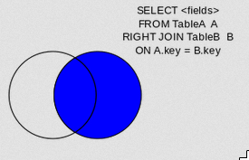
QUERY -> ALG.RELACIONAL -> RIGHT JOIN -> NULL
CMD:
select tb1.id, tb1.idvenda, tb1.livro_id, tb2.titulo from venda tb1
RIGHT JOIN livro tb2 on tb1.livro_id = tb2.id
WHERE tb1.id is null
QUERY -> ALG.RELACIONAL -> FULL JOIN
CMD:
select tb1.id, tb1.idvenda, tb1.livro_id, tb2.titulo from venda tb1
FULL JOIN livro tb2 on tb1.livro_id = tb2.id
QUERY -> ALG.RELACIONAL -> FULL JOIN -> NULL
CMD:
select tb1.id, tb1.idvenda, tb1.livro_id, tb2.titulo from venda tb1
FULL JOIN livro tb2 on tb1.livro_id = tb2.id
WHERE tb1.id is null and tb2.id is null
QUERY -> ALG.RELACIONAL -> CROSS JOIN
CMD:
select tb1.id, tb1.idvenda, tb1.livro_id, tb2.titulo from venda tb1
CROSS JOIN livro tb2
PLSQL
PLSQL -> VANTAGENS
SQL é a linguagem que o PostgreSQL e a maioria dos outros bancos de dados relacionais usam como linguagem de consulta. É portátil e fácil de aprender. Mas toda instrução SQL deve ser executada individualmente pelo servidor de banco de dados.
Isso significa que seu aplicativo cliente deve enviar cada consulta para o servidor de banco de dados, aguardar que ele seja processado, receber e processar os resultados, fazer alguma computação e enviar mais consultas ao servidor. Tudo isso incorre em comunicação entre processos e também incorrerá em sobrecarga de rede se seu cliente estiver em uma máquina diferente do servidor de banco de dados.
Com PL / pgSQL você pode agrupar um bloco de computação e uma série de consultas dentro do servidor de banco de dados, tendo assim o poder de uma linguagem procedural e a facilidade de uso do SQL, mas com considerável economia de sobrecarga de comunicação cliente / servidor.
Viagens de ida e volta extras entre cliente e servidor são eliminadas
Resultados intermediários que o cliente não precisa não precisam ser empacotados ou transferidos entre servidor e cliente
Várias rodadas de análise de consulta podem ser evitadas
Isso pode resultar em um aumento de desempenho considerável em comparação com um aplicativo que não usa funções armazenadas.
Além disso, com o PL / pgSQL você pode usar todos os tipos de dados, operadores e funções do SQL.
PLSQL -> ESTRUTURA
CREATE FUNCTION somefunc() RETURNS integer AS $$
<< outerblock >>
DECLARE
quantity integer := 30;
BEGIN
RAISE NOTICE 'Quantity here is %', quantity; -- Prints 30
quantity := 50;
--
-- Create a subblock
--
DECLARE
quantity integer := 80;
BEGIN
RAISE NOTICE 'Quantity here is %', quantity; -- Prints 80
RAISE NOTICE 'Outer quantity here is %', outerblock.quantity; -- Prints 50
END;
RAISE NOTICE 'Quantity here is %', quantity; -- Prints 50
RETURN quantity;
END;
$$ LANGUAGE plpgsql;
-- CALL
select somefunc()
PLSQL -> ALIAS
CREATE FUNCTION instr(varchar, integer) RETURNS integer AS $$
DECLARE
v_string ALIAS FOR $1;
index ALIAS FOR $2;
BEGIN
-- some computations using v_string and index here
END;
$$ LANGUAGE plpgsql;
PLSQL -> Conditionals -> IF -> THEN -> ELSE -> END IF
IF ... THEN ... END IF
IF ... THEN ... ELSE ... END IF
IF ... THEN ... ELSIF ... THEN ... ELSE ... END IF
and two forms of CASE:
CASE ... WHEN ... THEN ... ELSE ... END CASE
CASE WHEN ... THEN ... ELSE ... END CASE
PLSQL -> EXCEPTION
BEGIN
y := x / 0;
EXCEPTION
WHEN division_by_zero THEN
NULL; -- ignore the error
END;
PLSQL -> LOOP
LOOP
-- some computations
IF count > 0 THEN
EXIT; -- exit loop
END IF;
END LOOP;
LOOP
-- some computations
EXIT WHEN count > 0; -- same result as previous example
END LOOP;
PLSQL -> WHILE
<
PLSQL -> FOR
[ <
PLSQL -> FOR
<
PLSQL -> RECORD
CREATE FUNCTION cs_refresh_mviews() RETURNS integer AS $$
DECLARE
mviews RECORD;
BEGIN
RAISE NOTICE 'Refreshing materialized views...';
FOR mviews IN SELECT * FROM cs_materialized_views ORDER BY sort_key LOOP
-- Now "mviews" has one record from cs_materialized_views
RAISE NOTICE 'Refreshing materialized view %s ...', quote_ident(mviews.mv_name);
EXECUTE format('TRUNCATE TABLE %I', mviews.mv_name);
EXECUTE format('INSERT INTO %I %s', mviews.mv_name, mviews.mv_query);
END LOOP;
RAISE NOTICE 'Done refreshing materialized views.';
RETURN 1;
END;
$$ LANGUAGE plpgsql;
PLSQL -> EXECUTE
[<
PLSQL -> CURSOR
DECLARE
key integer;
curs4 CURSOR FOR SELECT * FROM tenk1 WHERE unique1 = key;
BEGIN
key := 42;
OPEN curs4;
PLSQL -> CURSOR
CREATE TABLE test (col text);
INSERT INTO test VALUES ('123');
CREATE FUNCTION reffunc(refcursor) RETURNS refcursor AS '
BEGIN
OPEN $1 FOR SELECT col FROM test;
RETURN $1;
END;
' LANGUAGE plpgsql;
BEGIN;
SELECT reffunc('funccursor');
FETCH ALL IN funccursor;
COMMIT;
PLSQL -> CURSOR
CREATE or replace FUNCTION reffunc2() RETURNS refcursor AS '
DECLARE
ref refcursor;
BEGIN
OPEN ref FOR SELECT col FROM test;
RETURN ref;
END;
' LANGUAGE plpgsql;
-- need to be in a transaction to use cursors.
BEGIN;
SELECT reffunc2();
reffunc2
--------------------
(1 row)
FETCH ALL IN "
COMMIT;
PLSQL -> Errors and Messages
RAISE [ level ] 'format' [, expression [, ... ]] [ USING option = expression [, ... ] ];
RAISE [ level ] condition_name [ USING option = expression [, ... ] ];
RAISE [ level ] SQLSTATE 'sqlstate' [ USING option = expression [, ... ] ];
RAISE [ level ] USING option = expression [, ... ];
RAISE ;
levels are DEBUG, LOG, INFO, NOTICE, WARNING, and EXCEPTION, with EXCEPTION being the default.
USING
RAISE EXCEPTION 'Nonexistent ID --> %', user_id
USING HINT = 'Please check your user ID';
MESSAGE
Sets the error message text. This option can't be used in the form of RAISE that includes a format string before USING.
DETAIL
Supplies an error detail message.
HINT
Supplies a hint message.
ERRCODE
Specifies the error code (SQLSTATE) to report, either by condition name, as shown in Appendix A, or directly as a five-character SQLSTATE code.
TRIGGERS
NEW -> Tipo de dados RECORD; variável que mantém a nova linha do banco de dados para operações INSERT / UPDATE em acionadores de nível de linha. Essa variável não é atribuída nos gatilhos no nível de instrução e nas operações DELETE.
OLD -> Tipo de dados RECORD; variável que mantém a linha antiga do banco de dados para operações UPDATE / DELETE em gatilhos de nível de linha. Esta variável não é atribuída em gatilhos no nível de instrução e para operações INSERT.
TG_NAME -> Nome do tipo de dados; variável que contém o nome do gatilho disparado.
TG_WHEN -> Texto do tipo de dados; uma cadeia de ANTES, DEPOIS ou INSÉDIO DE, dependendo da definição do acionador.
TG_LEVEL -> Texto do tipo de dados; uma string de ROW ou STATEMENT, dependendo da definição do trigger.
TG_OP -> Texto do tipo de dados; uma sequência de instruções INSERT, UPDATE, DELETE ou TRUNCATE para qual operação o acionador foi disparado.
TG_RELID -> Tipo de dados oid; o ID do objeto da tabela que causou a invocação do acionador.
TG_RELNAME -> Nome do tipo de dados; o nome da tabela que causou a invocação do acionador. Isso agora está obsoleto e pode desaparecer em uma versão futura. Use TG_TABLE_NAME em seu lugar.
TG_TABLE_NAME -> Nome do tipo de dados; o nome da tabela que causou a invocação do acionador.
TG_TABLE_SCHEMA ->Nome do tipo de dados; o nome do esquema da tabela que causou a invocação do acionador.
TG_NARGS -> Tipo de dados inteiro; o número de argumentos fornecidos ao procedimento de acionamento na instrução CREATE TRIGGER.
TG_ARGV [] -> Matriz de tipos de dados de texto; os argumentos da instrução CREATE TRIGGER. O índice conta a partir de 0. Índices inválidos (menor que 0 ou maior que ou igual a tg_nargs) resultam em um valor nulo.
TRIGGERS
CREATE TABLE emp (empname text,salary integer,last_date timestamp,last_user text);
CREATE FUNCTION emp_stamp() RETURNS trigger AS $emp_stamp$
BEGIN
-- Check that empname and salary are given
IF NEW.empname IS NULL THEN
RAISE EXCEPTION 'empname cannot be null';
END IF;
IF NEW.salary IS NULL THEN
RAISE EXCEPTION '% cannot have null salary', NEW.empname;
END IF;
-- Who works for us when they must pay for it?
IF NEW.salary < 0 THEN
RAISE EXCEPTION '% cannot have a negative salary', NEW.empname;
END IF;
-- Remember who changed the payroll when
NEW.last_date := current_timestamp;
NEW.last_user := current_user;
RETURN NEW;
END;
$emp_stamp$ LANGUAGE plpgsql;
TRIGGERS
CREATE TRIGGER emp_stamp BEFORE INSERT OR UPDATE ON emp
FOR EACH ROW EXECUTE PROCEDURE emp_stamp();
insert into emp (empname,salary,last_date,last_user)VALUES('TESTE',-200,NOW(),'TESTE1')
insert into emp (empname,salary,last_date,last_user)VALUES(null,200,NOW(),'TESTE1')
insert into emp (empname,salary,last_date,last_user)VALUES('teste2',null,NOW(),'TESTE1')
TRIGGERS
CREATE TABLE emp (
empname text NOT NULL,
salary integer
);
CREATE TABLE emp_audit(
operation char(1) NOT NULL,
stamp timestamp NOT NULL,
userid text NOT NULL,
empname text NOT NULL,
salary integer
);
TRIGGERS
CREATE OR REPLACE FUNCTION process_emp_audit() RETURNS TRIGGER AS $emp_audit$
BEGIN
--
-- Create a row in emp_audit to reflect the operation performed on emp,
-- make use of the special variable TG_OP to work out the operation.
--
IF (TG_OP = 'DELETE') THEN
INSERT INTO emp_audit SELECT 'D', now(), user, OLD.*;
RETURN OLD;
ELSIF (TG_OP = 'UPDATE') THEN
INSERT INTO emp_audit SELECT 'U', now(), user, NEW.*;
RETURN NEW;
ELSIF (TG_OP = 'INSERT') THEN
INSERT INTO emp_audit SELECT 'I', now(), user, NEW.*;
RETURN NEW;
END IF;
RETURN NULL; -- result is ignored since this is an AFTER trigger
END;
$emp_audit$ LANGUAGE plpgsql;
TRIGGERS
CREATE TRIGGER emp_audit
AFTER INSERT OR UPDATE OR DELETE ON emp
FOR EACH ROW EXECUTE PROCEDURE process_emp_audit();
insert into emp(empname,salary)values('teste1',100)
select * from emp_audit
update emp set salary=200;
delete from emp;
ATIVIDADES
Atividades PDF
Sistema de Controle Academico
Estudo de Caso Aeroporto
Estudo Caso Almoxarifado
Estudo Caso Aluguel Carro
Estudo Caso Congressos
Estudo Caso Imoveis
Projeto Database Clinica Medica
Projeto Agencia de Turismo
Projeto Companhia (Empresa)
Exemplo Pratico DER
Projeto Banco Dados Clinica TCC
Possiveis Projeto e Ideias
Minha biblioteca
Aviso minha escola
meu calendario - interligado com o da escola
minha materia
wiki escola
Pais Digitais
Eu Posso te ajudar
Minhas Disciplinas
GEO - Minha Escola
Minha Escola 360º - 3D
Meus Podcast
Projeto Integrador - APP pronta usar pra ajudar no estudo
Quanto minha escola investiu em nós.
Projeto conhecer Escolas 2018
Projeto Transporte Coletivo 2018
Mapa Papelaria 2018
BI - Evolução escolar desde 2010(Projeto DashBoard).


CADASTRO NACIONAL DE VEÍCULOS:
Elabore um modelo de dados para o cadastro nacional de veículos. Sabe-se que:
· O veículo possui sempre uma placa única em todo o país;
· O veículo possui sempre um responsável legal por ele. É necessário manter o histórico desta responsabilidade (propriedade);
· O veículo pertence sempre a uma categoria;
· O veículo é sempre de uma marca e de um modelo e possui ano de fabricação.
Considerando o mini-mundo acima pede-se:
– Construir o modelo conceitual, contendo:
- Entidades e seus atributos;
- Relacionamentos e seus atributos, se houver;
- Diagrama de Entidades e Relacionamentos;
- Lista de Regras de Negocio;
– Construir o modelo relacional a partir do modelo conceitual, contendo:
- Tabelas e colunas;
- Chave Primária de cada tabela;
- Chaves Estrangeiras;
- Chaves Canditada de cada tabela, se houver.
Exercicio01 - Mapeamento do MER para o Modelo Relacional
1 - Fazer o mapeamento do MER referente ao exercício Empresa de Transporte Marítimo para o Modelo Relacional, definindo as tabelas, chaves primárias e chaves estrangeiras.
2 - Fazer o mapeamento do MER referente ao exercício Fábrica de Roupas para o Modelo Relacional, definindo as tabelas, chaves primárias e chaves estrangeiras.
3 - Fazer o mapeamento do MER referente ao exercício Loja de Equipamentos Eletronicos para o Modelo Relacional, definindo as tabelas,
chaves primárias e chaves estrangeiras.
4 - Fazer o mapeamento do MER referente ao exercício Prestadora de Serviços de Limpeza para o Modelo Relacional, definindo as tabelas, chaves primárias e chaves estrangeiras.
E3_Fabrica de Roupas.xlsx
E5-Transporte Maritimo.xlsx
Exercicio02 -
Uma loja de venda de Eletrodomésticos quer automatizar o seu controle de compra e troca de aparelhos por parte de seus clientes (pessoa. que já efetuou uma compra na loja). Todo aparelho vendido possui garantia de 1 ano, a partir da data de venda. Isto significa que qualquer troca só poderá ser realizada dentro deste período, mesmo que já tenha havido várias trocas em função desta compra.
No termo de garantia. é anotado a data da compra, marca, modelo e número de série do aparelho vendido, juntamente com o nome e endereço do cliente que o comprou. A cada troca de aparelho, relativo a primeira compra, é verificado se ainda está no prazo de garantia, e é registrado o cliente que realizou a troca. Somente o próprio comprador é quem pode realizar a troca.
Os aparelhos defeituosos são imediatamente devolvidos para a fábrica e não mais retomam para a loja.
Passo a Passo
Exercício 3 - Fabrica de Roupas
Uma fábrica de roupas exclusivas (cada modelo, único, é projetado por estilistas famosos) deseja um sistema para controlar sua produção. A fábrica conta atualmente com 1230 funcionários sendo que a maior parte dos mesmos são costureiras trabalhando na atividade fim. A fábrica possui aproximadamente 600 máquinas de costura de diversos tipos (overlock, zig zag, costura reta, etc) de diversos fabricantes.
Para ingressar como costureira, a funcionária é avaliada para determinar em que tipo de máquina ela possui habilitação. Cada máquina pode realizar um ou mais tipos de costura.
Cada peça de roupa é produzida integralmente por uma costureira em uma máquina, sendo que neste período nem a costureira, nem a máquina podem ser alocados para outra coisa.
A remuneração das costureiras é mensal baseado em uma alíquota fixa (15%) sobre o preço de venda de cada peça. Nenhuma costureira pode receber menos que um determinado valor mínimo que é negociado no momento da contratação de cada uma. As costureiras são divididas em supervisões, cada uma possuindo uma supervisora que é a responsável pela qualidade do que é produzido, e pela monitoração das máquinas que estão em conserto. A máquina só vai para conserto após o término da produção da peça. A supervisora da costureira que estava produzindo nesta máquina se toma a responsável pela monitoração de seu conserto.
A fábrica necessita das seguintes informações:
a) Relatório de peças produzidas por uma costureira num determinado período, no seguinte formato: modelo da peça, descrição do modelo, data e hora de início e término da fabricação, código da máquina de costura, localização da máquina e o fabricante.
b) Relatório das costureiras sem produção no período (matrícula da costureira, nome, Valor Mínimo Negociado).
c) Relação das máquinas disponíveis, informando para cada uma o seu fabricante e o(s) tipo(s) de costura que possui.
d) Quais costureiras estão disponíveis e habilitadas a trabalhar em um tipo de máquina no momento.
e) Relação das máquinas que estiveram mais de 10 vezes em conserto, contendo: código da máquina e para cada conserto, matrícula e nome da supervisora responsável, data início e término do conserto.
Exercício 4 - Biblioteca Universitária
Elabore um diagrama de entidade e relacionamentos para atender as necessidades de informação de uma biblioteca universitária. São elas:
· O cadastro dos usuários com endereço completo, inclusive com a informação do curso do usuário e data de início e de término previsto;
· Cada usuário poderá fazer empréstimo de uma ou mais obras. Cada obra poderá ser emprestada mais de uma vez ao mesmo usuário.
· O cadastro das obras que constam no acervo da biblioteca, com o titulo, codigo ISBN, ano de publicacao, edição, editora, autor e a devida classificação. As obras são clasificadas como: livros científicos, coleções, matemarica, historia, filosofia, economia, administracao e negocios, engenharia, sociologia, literatura, artes, periódicos científicos, periódicos informativos, entretenimento, etc.;
· A língua em que encontra-se a obra. Exemplo: inglês, espanhol, português, etc.;
· O(s) autor(es) da obra, ou seja, cada obra poderá possuir um ou mais autores e cada autor poderá ter escrito uma ou mais obras. Para o cadastro de autores deverão constar o nome e a nacionalidade do mesmo;
· As editoras das obras com a respectiva cidade. Cada editora poderá estar ligado a uma ou mais obras porém cada obra está associada a somente uma editora.
Para resolver o caso acima, siga os passos:
1 - Identifique as entidades que deverão ser criadas.
2 - Efetue os relacionamentos entre as entidades identificadas
3 - Identifique para cada entidade e relacionamento os atributos;
4 - Identifique para cada entidade o atributo que será o identificador das ocorrencias da entidade;
Exercício 6 - Prestadora de Serviços de Limpeza
A firma "W. R. Domésticas" presta serviços de limpeza e deseja um sistema automatizado que cuide, principalmente, da alocação dos empregados aos pedidos de serviço feitos pelos clientes e de possíveis criticas no momento da alocação.
O cliente telefona para a firma e faz um pedido de serviço. Neste momento a atendente verifica no cadastro se ele já é um cliente da firma; caso não seja, ela cadastra-o solicitando: CGC, Razão Social, Endereço e Telefone: se for pessoa jurídica, ou CPF, Nome, Endereço e Telefone, se for pessoa física. A firma atribui um código próprio para identificar qualquer um dos seus clientes.
Estando o cliente devidamente cadastrado, a atendente abre um bloco de pedidos e preenche um "Pedido de Serviço", anotando: o nome do cliente, a data da abertura, a data para realização dos serviços, o local onde deverá ser realizado, e uma relação dos serviços que o cliente quer que seja executado naquele local, com a respectiva metragem quadrada de cada um. A atendente consulta uma tabela de serviços ( código do serviço, descrição, valor por m2, duração por m2) e anota no pedido a duração e o valor, unitário e total dos serviços. Após o preenchimento do pedido, a atendente informa ao cliente o número do seu pedido, o valor total a ser pago e a duração máxima para o término dos serviços, supondo que serão executados em seqüência.
Todo empregado está habilitado a executar algum tipo de serviço de limpeza porém, apesar do treinamento fornecido, nem todos os empregados podem executar todos os tipos de serviço. Caso a firma não possua nenhum empregado habilitado para a execução de um tipo de serviço que deverá ser prestado a um pedido, antes da realização é providenciado um treinamento e, posteriormente, um empregado é alocado ao pedido. No momento de alocar cada empregado que irá atender ao pedido, é verificado se ele não está alocado em outro pedido no momento de sua realização, e se ele está habilitado para algum dos serviços exigidos no pedido (se não estiver habilitado, não pode ser alocado).
A alocação dos empregados ao pedido é considerada completa se existir para cada tipo de serviço exigido no pedido, pelo menos um empregado habilitado alocado ao pedido. "Qual empregado" vai executar "qual serviço do pedido", é decidido pela própria equipe no momento da realização, e não temos interesse em registrar.
O sistema deverá ser capaz de informar, dentre outras coisas:
Relatório dos pedidos com alocação incompleta, imprimindo para cada alocação incompleta o número do pedido, código do cliente, nome ou razão social do cliente, data da realização e uma relação de todos os serviços exigidos com sua respectiva metragem quadrada.
A relação de todos os empregados(matrícula e nome) que tenham habilitação em um determinado tipo de serviço e que não esteja alocados a (trabalhando em) um pedido, em uma determinada data.
Exercício 7-2 - Normalização
Exercício 8 - Firma de Equipamentos de Informática
Uma firma que utiliza equipamentos de informática necessita de um sistema que gerencie a sua rede de micro-computadores (ponto-a-ponto, não existe servidor da rede), controlando usuários. máquinas e impressoras. A rede é composta de servidores de impressão, estações e impressoras. Os servidores de impressão, e suas impressoras, ficam dentro de uma sala própria. O sistema também irá controlar a partir de qual estação o usuário está conectado a rede, e os seus arquivos enviados para impressão.
Para todos os micros deseja-se cadastrar: código do patrimônio, descrição, capacidade do disco rígido, quantidade de memória e, sendo uma estação a sua localização, sendo um servidor o tamanho máximo do buffer e a quantidade máxima de buffers de impressão e que ele suporta, e as impressoras ligadas a ele (no máximo 3 ), caso existam. Para impressoras deseja-se cadastrar: código do patrimônio, descrição, velocidade (ppm) e, consequentemente, o servidor a que está ligada. Nesta firma todas as impressoras estão ligadas a algum servidor, não sendo compartilhada por mais de um servidor.
Para controlar os usuários, o sistema só precisa do nome de guerra e senha de cada um. Como os usuários não possuem máquina fixa, a sua conexão à rede pode ocorrer a partir de qualquer estação. Tendo o usuário uma conexão ativa, o sistema não permitirá que ele se conecte a partir de outra estação. Há interesse em controlar apenas as conexões ativas (as conexões desfeitas são irrelevantes).
No caso de impressão, o sistema deverá saber qual o arquivo, de quem ele é, e em qual impressora será impresso (atenção: somente usuários com conexão ativa é que possuem condição de enviar arquivos para , impressão). É o usuário que escolhe a impressora onde ele quer que o seu arquivo seja impresso. Nada impede que usuários diferentes enviem arquivos de mesmo nome para impressão, porém (nesta firma) para o mesmo usuário isso não é possível, mesmo em impressoras diferentes. Neste caso o sistema permite alterar o número de cópias a serem impressas. Só deve ser mantido registro dos arquivos que ainda estão na fila de impressão.
O sistema deverá listar, para cada impressora, os arquivos que estão aguardando impressão, com o respectivo usuário que a enviou, mesmo que o usuário não esteja mais ativo na rede. Sempre que solicitado o sistema exibirá, para cada estação, o seu código e, caso exista, o nome do usuário conectado, a data e hora início desta conexão e, se houver, nome e quantidade de cópias dos arquivos que ele enviou e que ainda estão aguardando impressão.
Exercicio 11 - Modelo Relacional
Derive o modelo relacional a partir dos relacionamentos abaixo:
1 ) Um funcionario é alocado em um departamento e um departamento pode alocar um ou muitos funcionários.
Exercicio 11 - Modelo Relacional
Derive o modelo relacional a partir dos relacionamentos abaixo:
2 ) Um pedido é composto por itens de pedido e cada item compõe apenas um pedido.
Exercicio 11 - Modelo Relacional
Derive o modelo relacional a partir dos relacionamentos abaixo:
3 ) Um funcionario gerencia um departamento e um departamento pode ser gerenciado por um funcionario.
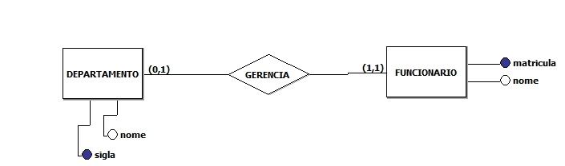
Exercicio 11 - Modelo Relacional
Derive o modelo relacional a partir dos relacionamentos abaixo:
4 ) Um projeto aloca muitos funcionarios e muitos funcionarios sao alocados em um projeto em uma data.
Exercicio 11 - Modelo Relacional
Derive o modelo relacional a partir dos relacionamentos abaixo:
5 ) Uma disciplina possui como pre-requisito uma outra disciplina.
Exercicio 12 - Modelo Relacional
Construa o modelo relacional para o diagrama de entidade e relacionamentos abaixo:
Exercício 13 - Controle de Funcionários
Elabore um modelo conceitual de dados para o cadastro de funcionários
de uma empresa, sabendo-se que:
· Uma Empresa pode ter várias filiais e possui um CNPJ e a razão social.
· Cada empresa poderá estar cadastrada apenas uma vez.
· Cada Filial de uma empresa pode ter vários departamentos.
· Cada filial poderá estar cadastrada apenas uma vez.
· Um departamento de uma filial pode ter vários empregados.
· Cada empregado poderá estar vinculado a uma filial apenas uma vez.
Considerando o mini-mundo acima pede-se:
– Construir o modelo conceitual, contendo:
- Entidades e seus atributos;
- Relacionamentos e seus atributos, se houver;
- Diagrama de Entidades e Relacionamentos;
- Lista de Regras de Negocio;
– Construir o modelo relacional a partir do modelo conceitual, contendo:
- Tabelas e colunas;
- Chave Primária de cada tabela;
- Chaves Estrangeiras;
- Chaves Canditadas, se houver.
Exercicio 15 - Modelo Relacional 01
1 ) Considerando o diagrama de entidade e relacionamentos abaixo, construa o modelo relacional correspondente.

Exercicio 15 - Modelo Relacional 02
2 ) Considerando o diagrama de entidade e relacionamentos abaixo, construa o modelo relacional correspondente

Desafio 01
Desafio 02
Scripts DDL
01_post_Categoria.sql
02_disciplinas.sql
03_soe_edificios.sql
04_SBSI.sql
05_academico.sql
06_banco-filmes-postgresql.sql
07_AEmpresa.sql
08_biblioteca.sql
08_netflix.sql
biblia.sql
categorias.sql
10_HospitalEspanhol.sql
11_customer.sql
12_dados-iniciais.sql
13_DadosPadrao.sql
14_ERBDSQL_TABS2.sql
15_escola.sql
16_locadora_insercao.sql
17_schema_pedido.sql
18_livraria.sql
19_jsonEvents.sql